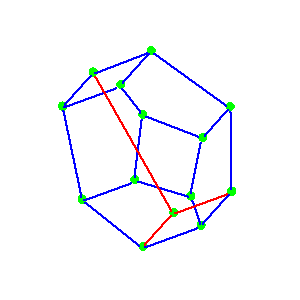

Structure of the Loday-Ronco Hopf Algebra of TresMarcelo Aguiar and Frank Sottile.Loday and Ronco defined an interesting Hopf algebra structure on the linear span of the set of planar binary trees. They showed that the inclusion of the Hopf algebra of non-commutative symmetric functions in the Malvenuto-Reutenauer Hopf algebra of permutations factors through their Hopf algebra of trees, and these maps correspond to natural maps from the weak order on the symmetric group to the Tamari order on planar binary trees to the boolean algebra. We further study the structure of this Hopf algebra of trees using a new basis for it. We describe the product, coproduct, and antipode in terms of this basis and use these results to elucidate its Hopf-algebraic structure. We also obtain a transparent proof of its isomorphism with the non-commutative Connes-Kreimer Hopf algebra of Foissy, and show that this algebra is related to non-commutative symmetric functions as the (commutative) Connes-Kreimer Hopf algebra is related to symmetric functions. |  |